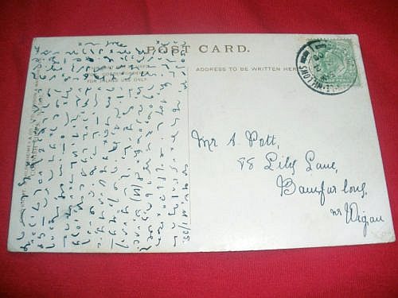
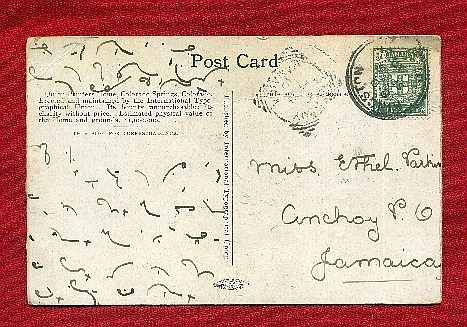
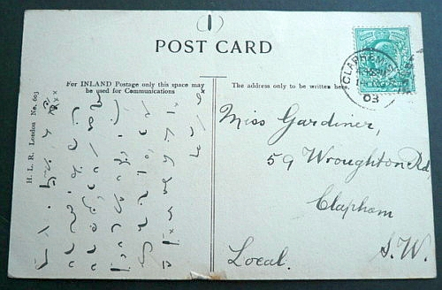
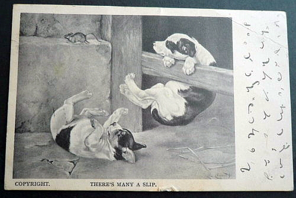
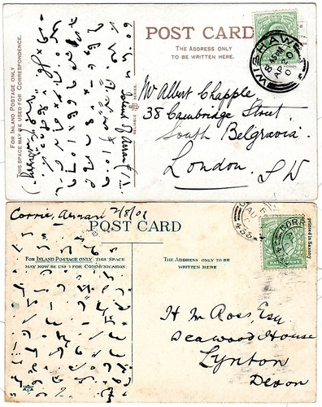

International
InternationalPocztówki stenograficzne.
2012-03-15 | autor: flamenco108Kiedyś już chyba o tym pisałem. Ale przybyło mi w kolekcji linków, więc aktualizuję. O powszechności stosowania stenografii warto pisać przy każdej okazji. Tajemna sztuka szybkiego pisania w krajach cywilizowanych naprawdę dotyczyła większości wykształconej warstwy społeczeństwa. Nie dotyczyło to Polski, o czym coraz lepiej się przekonuję czytając historyczne materiały źródłowe, tj. sprawozdania z kongresów stenograficznych, gdzie wciąż narzeka się na brak zainteresowania wśród Polaków, na niechęć władz do wspierania stenografii… Tymczasem za miedzą, po lewej i prawej, a także na dole i górze, stenografia zdobywała wciąż nowych zwolenników. Jest to z pewnością towar podobny do komputera: nie możesz się przekonać o jego wartości (roboczej, rozrywkowej oraz innej), zanim sobie takiego nie sprawisz. Zanim go sobie nie sprawisz, świetnie sobie radzisz bez niego. Ale kiedy już go sobie sprawisz, nie potrafisz zrozumieć, jak mogłeś bez niego żyć.

Poczta frontowa?

Pocztówka z lazaretu oficerskiego

To podobno jest widok na Karlove Vary


pozdrowienia z Triestu
ta chyba jest do Legnicy
Ciężko jest przerwać zbieranie pocztówek, szczególnie, że to nic nie kosztuje: po prostu mam nastawione wyszukiwacze internetowe na Ebay i jak coś się trafia, to skrzętnie zapisuję. To nie jest cała kolekcja, część gdzieś mi się już zapodziała, może już opublikowałem, nie pomnę. Te pocztówki oczywiście również skasuję z dysku, skoro już znajdą się na blogu.
Tak czy owak widać, że mnóstwo ludzi posługiwało się stenografią: aby napisać pocztówkę obie strony połączenia muszą posługiwać się tym samym kodem, to po pierwsze. Po drugie, widać rozrzut czasowy i geograficzny w.p. pocztówek. Widać różne systemy stenograficzne, które musiały być w jakiś sposób powszechne. Komentarz na Flickr.com co do jednej z powyższych pocztówek jest mniej więcej taki, że po “Kochany Hugo” reszta jest dobrze zabezpieczona kodem stenograficznym. Czy mogło być tak, że stenografia zabezpieczała prywatność pisma? Nie do końca. W przedwojennych Niemczech większość obywateli kończyła szkoły, w których obowiązkowym przedmiotem była stenografia. Oczywiście większość wkrótce o niej zapominała, ale nie wszyscy. Osoby sobie bliskie potrafiły odczytać wzajemnie nawet mocno poskrótowane teksty, opatrzone mnóstwem prywatnych znaczników. Ale z pewnością nie było tak, że pismo to pozostawało tajemne, ponieważ np. na froncie (a także w lazaretach) obowiązywała cenzura korespondencji ze względu na tajemnicę wojskową. Z tego wniosek, że cenzorzy również musieli umieć przeczytać pismo stenograficzne.
A zatem na podstawie tylko jednej z tych pocztówek można założyć, że angażowała aż trzech stenografów. Dodajmy, że większość pocztówek lądowała w śmieciach niedługo po przeczytaniu, a w ciągu następnych bez mała 100 lat resztę spotkało mnóstwo innych zdarzeń losowych i mamy wynik: wciąż po świecie krążą setki i tysiące pocztówek zapisanych pismem stenograficznym.

No, i nie zapominajmy o naszym, skromnym wkładzie w pocztówki stenograficzne ;-)
2012-03-15 autor: flamenco108